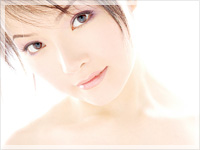
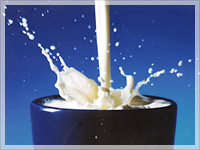
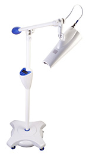
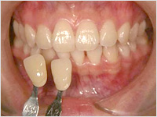
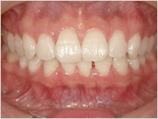
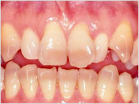
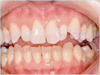
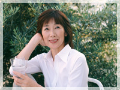

審美歯科
審美歯科ってなに？

審美歯科は、口元の美しさに焦点をあてた総合的な歯科医療のことです。 見た目だけではなく、機能的にも優れた歯を取り戻すことができます。 正常な日常生活を送るためには、美しく健康な歯や歯肉、そして咀嚼（そしゃく）機能を取り戻すことは重要な要素です。
ポーセレンラミネートベニア
ラミネートベニア治療は、歯の表面を約0.3～0.9mm削って、 ネイルチップのような薄いセラミック（陶材）の"板"を強力な接着剤で貼り付ける治療法です。 着色が強すぎてホワイトニングではどうしても歯を白くできない方、 又、歯と歯の間に隙間が開いている方や歯の先端が欠けている方などの審美回復に最適の治療方法です。 最小限の切削量で非常に高い効果を得られる治療です。
オールセラミックス
オールセラミックスとは、すべての素材が「セラミック」ということ。 中でもオールセラミッククラウンは、患者さんそれぞれの歯に合わせて精巧に作られた人工歯のことです。 金属を全く使用していないため、金属アレルギーの方に最適で、しかもより自然な歯を再現することができます。 また、素材であるセラミックは生体への親和性が高いため、身体にやさしい人工歯として使用されています。
※クリックすると、拡大写真をご覧になれます。
ジルコニア
ジルコニアとは、ごく最近使用が認可された材料で、これまでのセラミックベースの素材をさらに強くした性質を持っています。 天然歯と同様の光の透過性とツヤを持ち、さらに強度をもそなえる材料で、 審美的なブリッジ治療に最適な材料として使われはじめています。
ホワイトニング

ホワイトニングとは、歯を削ったりセラミックなどを詰めたり貼り付けたりせず、特殊な薬剤を使用して歯自体を白くする治療法です。 ブラッシングでは除去できない歯の色素沈着などを取り除き、本来の白さを取り戻します。簡単に言えば歯の漂白です。
ホワイトニングには「オフィスホワイトニング」「ホームホワイトニング」「デュアルホワイトニング」があります。

オフィスホワイトニング
歯科医院にて行われるホワイトニングで、1時間程度で効果があらわれます。
高濃度の過酸化水素を含む薬剤を歯の表面に塗り、それに反応する光を適切な時間照射し、
歯面の着色物質を分解させながら白くしていきます。
現在多く用いられているのはハロゲンやプラズマなどの光です。
六泉寺歯科では、発熱の少ないBeyondo Systemを用いたオフィスホワイトニングを行っております。
Beyond http://www.beyondsystem.com/

術前

術後
ホームホワイトニング
歯科医院にてカウンセリングを受けた後に、 歯科医師の指導のもと家庭で行うホワイトニングです（2001年12月に厚生労働省で認可されました）。 マウストレイに薬剤を塗布し、1日6～8時間、2～4週間毎晩歯に装着します。使用する薬剤や着色の度合い等により期間は異なります。

術前

術後
デュアルホワイトニング
即効性のあるオフィスホワイトニングと持続性のあるホームホワイトニングを併用し、 ホワイトニング効果を最大限に高めた治療です。効果を短時間で実現、持続させたい方におすすめです。
ホワイトニングQ&A
Q. ティースクリーニングとホワイトニングはどう違うのですか？
ティースクリーニングは歯の表面に付いた色素を取り除き、歯本来の持つ色に戻す治療です。 一方、ホワイトニングは歯の本来の色よりさらに白くしたいときに行われる治療です。
Q. ホワイトニングは誰でもできますか?
以下の禁忌症に該当していなければどなたでも可能ですが、人工歯や差し歯、詰めもの、 金属により変色してしまった歯などには効果は出ません。
禁忌症
- 妊娠中や授乳中の女性
- 漂白剤やラテックスにアレルギーのある方
- 無カタラーゼ症の方
- 重度な知覚過敏を有する歯
Q. 痛みはありますか?
ホワイトニングの効果が作用する際に歯の水分を奪う為、脱水症状による「刺激感」は避けられません。 しかし、これは歯質内の水分量に関係しているので、個人差があり刺激の出ない人もいます。 又、この「刺激感」は全く一時的なもので、これで歯質が悪くなることはありませんので安心してください。
Q. どれくらい白くなりますか?
個人差があるので、「これくらい白くなります」とは一概に言えません。 変化の度合いの大きい方もいれば小さい方もいらっしゃいます。 一般的にグレー系などの濃い色の歯は効果が現れにくいです。
Q. オフィスホワイトニングは1回で白くなりますか？
1回でかなり白くなります。 しかし、1回だけのホワイトニングではいくら白くなっても、これは見せかけの白さです。 1週間後に2回目のホワイトニングを行うことにより、「白さ」が増すと同時に、「白さ」の定着が期待できます。 2回以上のホワイトニングをお勧めします。
Q. ホワイトニングの効果はどのくらい維持しますか？
ホワイトニングした歯は時間が経過するにつれ、再び着色していきます。 効果を少しでも長く持続させるためには、ホワイトニング剤配合の歯磨き粉を使用したり、 定期的に歯科医院で色のチェックをしたりすることをおすすめします。 歯科医院で1年に1～2回追加ホワイトニングを行うことで、白さを持続することが可能です。 「歯に色がついてきたな」と思ったら、それが次のホワイトニングのタイミングです。
Q. ホワイトニングで注意することは？
歯の表面を覆っている被膜（ペリクル）は、ホワイトニングで除去されます。 しかしこのペリクルは唾液によって12時間から24時間かけて再生されます。 この唾液を着色飲食物を取ることで汚してしまうと、ペリクルの無い歯はすぐに着色してしまいます。 再生するまでの24時間は色の濃い食べ物、飲み物は控えてください。
Q. ホワイトニングは安全ですか？
ホワイトニングはアメリカでは約20年前から行われており、 アメリカの大学をはじめ日本の各大学研究所でも、その安全性は証明されています。 歯を軟化させたり傷めたりすることなく、歯を安全に白くすることができるのです。
審美歯科治療料金表
| クラウンの種類 | 費用 | 特徴 |
|---|---|---|
| オールセラミッククラウン | 100,000 | すべて陶材で作ったもので、金属を用いないため光の透過性があり、本物の歯と見まがう自然な仕上がりです。 |
| ポーセレンラミネートベニア | 100,000 | 歯の表面を一層削り、シェルを貼りつけるので、ダメージが少なく、 歯の色、透明感や歯ぐきとの境目は、より自然で審美的に仕上がります。 |
| メタルボンドポーセレン | 80,000 | 金属フレームに陶材を焼付けたもので、色、ツヤとも自然な歯に近い美しさに仕上がり、 着色しにくいですが、硬い陶材のため強い衝撃により欠けることもあります。 |
| ハイブリッドクラウン | 50,000 | セラミックとレジンのハイブリッドでできているため、 セラミックに比べて審美的にやや劣るが、欠けにくい材質です。 |
| 硬質レジン前装冠 | 40,000 | 金属冠の頬側にレジンを貼り付けたもので、装着時はある程度きれいですが、 時間が経過するにつれて着色し、磨耗していきます。 |
| ゴールド冠・白金加金冠 | 50,000～ | 色が目立つのが難ですが、軟らかいので歯にぴったりとフィットし段差ができない為、良好な予後が得られます。 |
| ホワイトニングの種類 | 費用 | 特徴 |
| オフィスホワイトニング | 14,000（1回） | 初めての方は、2回以上をお勧めします。 |
| ホームホワイトニング | 30,000～ | 上下マウストレー＋専用薬剤1月分 |
| デュアルホワイトニング | 50,000～ | オフィス2回＋ホーム1月分 |
| 義歯の種類 | 費用 | 特徴 |
| 自由診療義歯 | 50,000～ | 保険適用外の鉤や磁石を使用した場合、義歯本体も自費になります。 |
| マグネット | 40,000（1個） | 歯根もしくはインプラントと義歯に磁石を埋め込むことにより、義歯の維持安定が良くなります。 |
| ホワイトクラスプ | 12,000（1個） | ご自分の歯の色に合わせた鉤が作製できるので、審美性がよく、金属アレルギーの心配がありません。 |
| ノンクラスプ義歯 | ||
| 1～3歯欠損 | 70,000 | 鉤がないので、審美性に優れています。 |
| 4～7歯欠損 | 90,000 | |
| 8～11歯欠損 | 120,000～ | |
| 12～13歯欠損 | 140,000～ | |
| コバルトクロム床義歯（総義歯） | 180,000 | 特定療養費制度が使えます。 （保険診療分3～4万円程度が料金より差し引かれます） |
| チタン床義歯（総義歯） | 200,000 | |
| コンフォート義歯 | 220,000～ | 硬い入れ歯の裏面を生体用シリコンというクッションで覆った、全く新しいタイプの義歯で、よく噛めます。 |
※上記価格はすべて税抜です。
義歯について

義歯とは、虫歯や歯槽膿漏、歯周病等によって失ってしまった歯を補うために装着する人工の歯の事です。
一般的なものは金具で歯を抱え込む留がねを使った義歯が、アタッチメントといわれるものを利用した入れ歯や、フレキサイト（弾力性のある）入れ歯といわれる留がねの無いもの、アタッチメントの一種ですがマグネット入れ歯といわれるものは残っている歯根面に磁力を受け る面体を装着し、義歯に小型で磁力の強い磁石を入れて固定するもの、人工歯根（インプラント）で入れ歯を固定する方法など様々な種類の入れ歯 が開発されています。
入れ歯等ににご不満をお持ちの方、または入れ歯について相談されたい方は是非お気軽にご相談下さい。


{kind=link}
{kind=link}
{kind=link}
{kind=link}